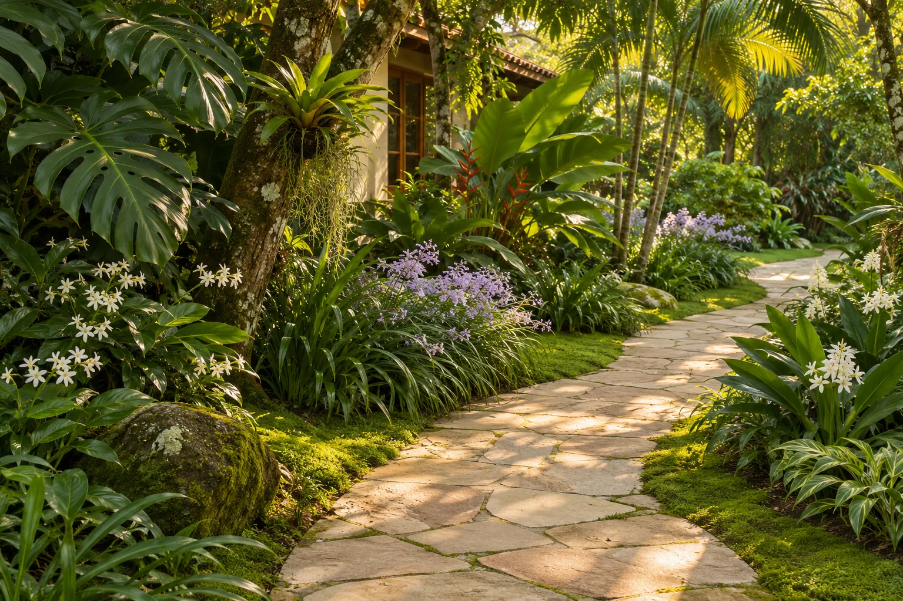

Manutenção de jardins
Corte de grama, poda e limpeza de canteiros conforme as necessidades do seu espaço.
Orçar manutenção
Cuidado profissional com seu espaço verde
Tenha um jardim bonito, saudável e bem cuidado sem precisar se preocupar com a manutenção. Conte com a RM Jardinagem para transformar e preservar suas áreas verdes.
Quero fazer um orçamento agora!Atendimento personalizado Orçamento pelo WhatsApp

Sobre a RM Jardinagem
A grama cresce, a poda fica para depois e os canteiros perdem o desenho. Entre os compromissos da semana, é fácil adiar o cuidado com o jardim.
A RM Jardinagem ajuda a retomar esse cuidado. Conversamos sobre como você usa o espaço, o que já está plantado e a manutenção que faz sentido para a sua rotina.
Conheça os serviçosServiços
Para manter o que já está bonito, recuperar um jardim que perdeu a forma ou começar um espaço verde do zero.
Corte de grama, poda e limpeza de canteiros conforme as necessidades do seu espaço.
Orçar manutençãoPlanejamento do plantio considerando a incidência de sol, o espaço e a rotina de cuidados.
Orçar implantaçãoReorganização de canteiros e reposição de plantas para recuperar áreas que perderam o vigor.
Orçar renovaçãoNosso trabalho
O cuidado começa observando o espaço. Canteiros bem definidos deixam a passagem livre, a poda ajuda a manter a forma das plantas e o corte regular muda o aspecto do gramado.
Conversar sobre meu jardim
Perguntas frequentes
Conte em que cidade ou bairro fica o jardim e o que precisa ser feito. Se puder, envie fotos e a área aproximada.
Informe se você precisa de um atendimento pontual ou periódico. A frequência pode ser combinada durante o orçamento.
Informe sua localização pelo WhatsApp para consultar a disponibilidade de atendimento.
Os depoimentos de clientes serão publicados aqui quando estiverem disponíveis.
Contato
Conte o que você precisa e solicite um orçamento pelo WhatsApp.
Solicitar orçamento(61) 99428-3830